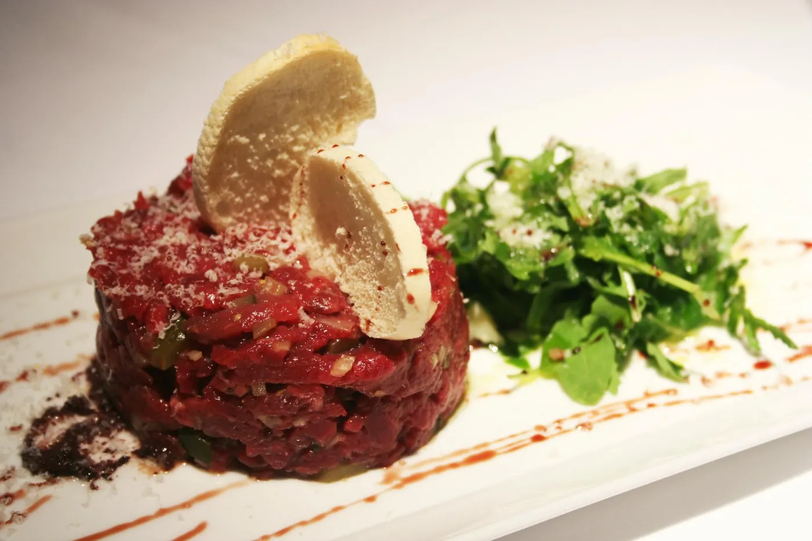
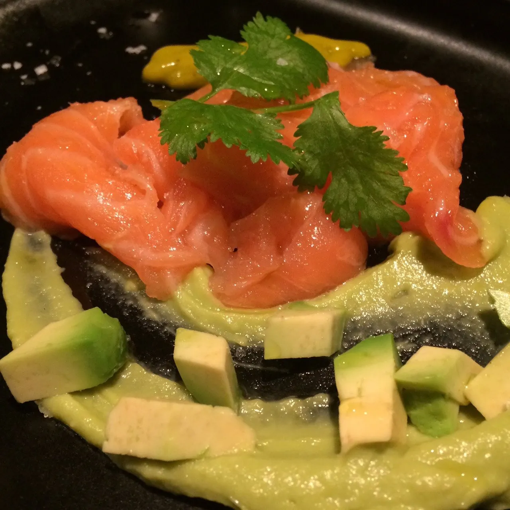
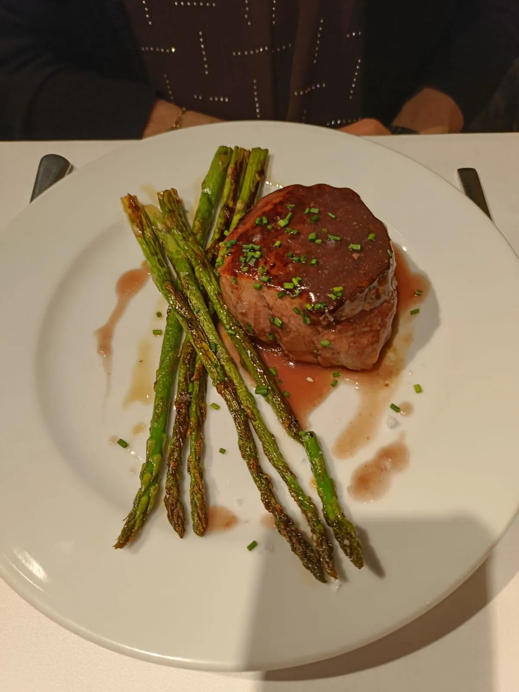
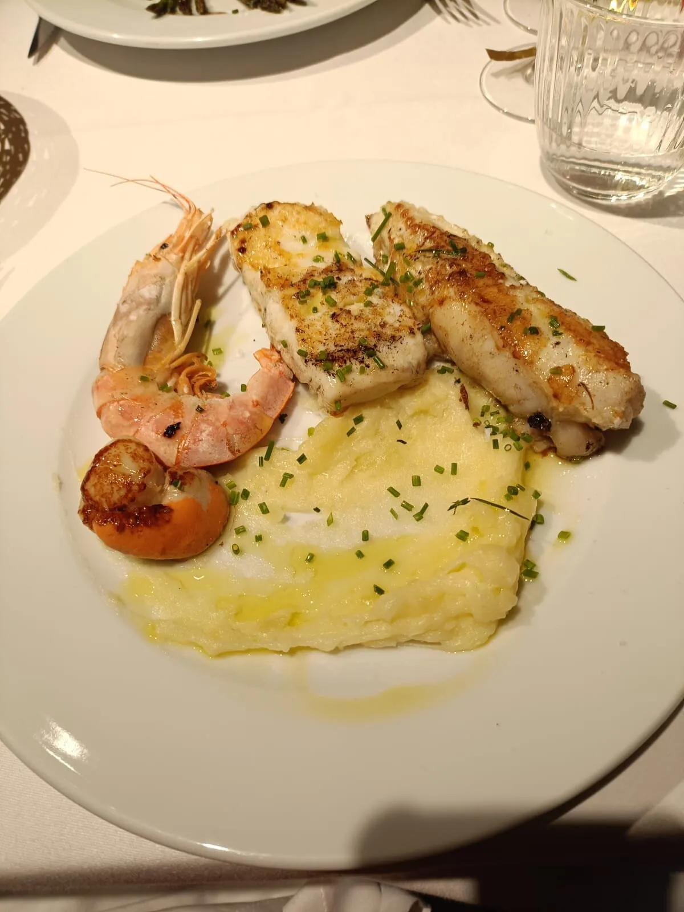

Còrsega 400 · Entre Gràcia y Eixample
Cocina de
autor entre
piedra y hierro.
Fêrrum significa hierro en latín. Y eso somos: una sala con paredes de piedra rough, vigas de hierro forjado y mesa para veinte. Cocina mediterránea creativa, producto fresco de mercado, vinos catalanes. Sin pose, con detalle.
La piedra estaba aquí antes que el restaurante. Cuando abrimos la sala en 2008, no la tapamos: la limpiamos, la dejamos respirar. Esa pared es la que nos pone el listón cada noche. — El equipo de Fêrrum
01 · La cocina
Lo que sale
esta semana.
La carta cambia con el mercado. Estas son las elaboraciones que rotan con más frecuencia y que los clientes regulares vienen a buscar. Algunas duran un día, otras una temporada.
-
01Crudo
Steak tartar
Solomillo cortado a cuchillo, alcaparras, cebolla roja y yema curada en sal. Servido con tostas de pan de pueblo. -
02Frío
Tiradito de salmón
Salmón curado con cítricos sobre crema de aguacate, cilantro y aceite de hierbas. Versión mediterránea del clásico peruano. -
03Caliente
Buñuelos de espinacas
Espinacas frescas, queso de cabra y piñones. Rebozado fino, frito al momento, servido con miel de romero. -
04Mar
Calamar relleno
Calamar pequeño relleno de su propia carne picada y sofrito catalán. A la brasa suave, con su salsa reducida. -
05Carne
Cordero lacado
Pierna de cordero a baja temperatura durante doce horas, lacada con miel y romero, servida con cuscús de coliflor. -
06Estrella
Solomillo con foie
Solomillo de ternera gallega a punto, escalope de foie a la sartén, reducción de Pedro Ximénez y espárragos verdes a la plancha. -
07Temporada
Ravioli de trufa
Pasta fresca rellena de ricotta y trufa negra, mantequilla noisette y parmigiano curado. Temporada de trufa, octubre a marzo. -
08Postre
Espuma de chocolate
Chocolate negro 70%, bizcocho roto en la base, helado de vainilla de Tahití y crujiente de caramelo salado.
02 · La mesa
Producto fresco,
plato a plato.
Fotografías reales de los platos servidos. Sin photoshop, sin emplatados de revista: lo que sale de cocina y llega a la mesa esa misma noche.




03 · El espacio
Veinte cubiertos,
una pared de piedra.
El comedor es pequeño y eso lo hace posible. Cocinamos cada plato como si fuera la única mesa de la noche, porque casi lo es. Reserva con tiempo si vienes fin de semana.
El espacio es íntimo: una sola sala con veinte cubiertos máximos, paredes de piedra catalana, vigas de hierro forjado, jazz suave de fondo y velas sobre la mesa. No tenemos terraza, no tenemos barra: aquí se viene a cenar, a hablar tranquilo, a probar lo que sale esa noche.
El equipo es pequeño también: dos en cocina, una en sala. Tardamos lo que tarda cocinar bien, que no es lo mismo que cocinar rápido. Si vienes con prisa, mejor otro día. Si vienes a disfrutar, esta es tu casa por dos horas.
- Aforo20 cubiertos · una sola sala
- TerrazaNo · solo comedor interior
- MúsicaJazz suave de fondo
- AmbienteCena lenta · 1,5 a 2 h
04 · La carta
A la carta
o menú mediodía.
Carta corta con elaboraciones de temporada. De lunes a sábado al mediodía servimos también un menú de tres pasos para la pausa del trabajo. Cena solo a la carta.
05 · Preguntas frecuentes
Antes de
la visita.
Las dudas que llegan con más frecuencia por WhatsApp. Si la tuya no está aquí, escríbenos directamente.
-
01
¿Aceptan reservas el mismo día?
Sí, si queda mesa libre. El aforo es pequeño y los fines de semana suele estar completo desde principios de semana. Para cena, recomendamos reservar con tres o cuatro días de antelación. Para mediodía entre semana, suele haber disponibilidad con un par de horas.
-
02
¿La carta cambia mucho?
Sí. Tenemos un núcleo de platos que están todo el año (tartar, tiradito, espuma de chocolate). El resto rota con el mercado: setas en otoño, espárragos en primavera, trufa en invierno, gamba roja en verano. Si vienes una vez al mes, siempre hay cosa nueva.
-
03
¿Tienen opciones vegetarianas?
Sí. Buñuelos de espinacas, ravioli de ricotta y trufa, ensalada de remolacha y queso, espárragos a la plancha con romesco. Avísanos si eres vegano estricto al reservar: podemos adaptar varios platos retirando el queso y la mantequilla.
-
04
¿Hacen eventos privados?
Sí. Privatizamos el comedor completo para grupos de quince a veinte personas. Menú cerrado, vino incluido, una hora extra de sobremesa sin presión. Cumpleaños, aniversarios, reuniones de empresa. Llámanos o escribe por WhatsApp con dos semanas de antelación.
06 · Visítanos
Còrsega 400.
Entre la Vila de Gràcia y la Dreta de l'Eixample. A dos minutos a pie de la parada Verdaguer y a cinco de la parada Diagonal. Cena a la carta de lunes a sábado, domingo solo mediodía.
- Lunes13:00 – 16:00 · 20:00 – 23:00
- Martes13:00 – 16:00 · 20:00 – 23:00
- Miércoles13:00 – 16:00 · 20:00 – 23:00
- Jueves13:00 – 16:00 · 20:00 – 23:00
- Viernes13:00 – 16:00 · 20:00 – 23:00
- Sábado13:00 – 16:00 · 20:00 – 23:00
- Domingo12:00 – 16:00